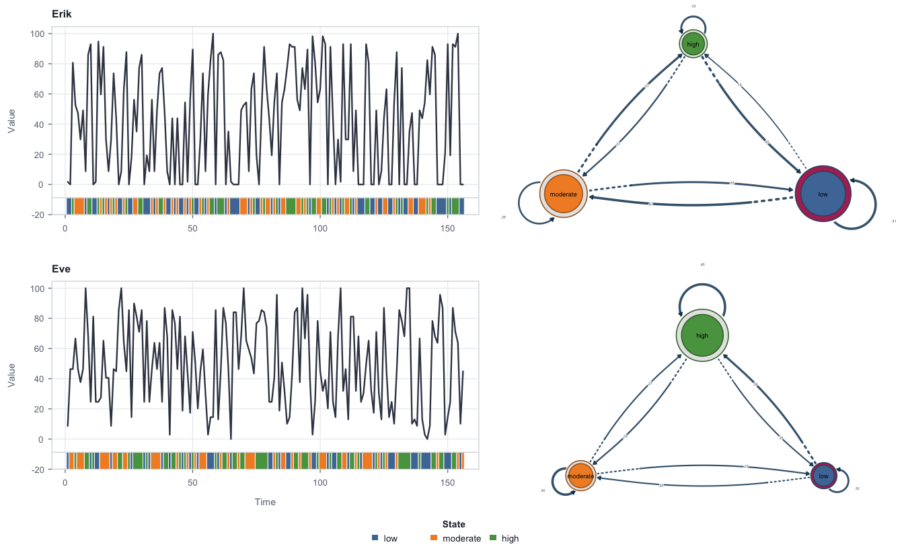
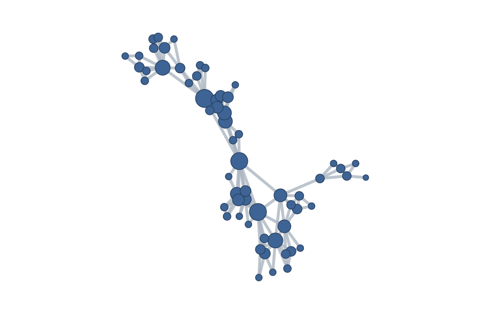
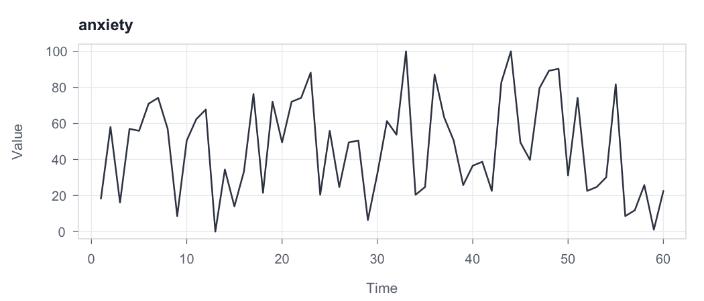
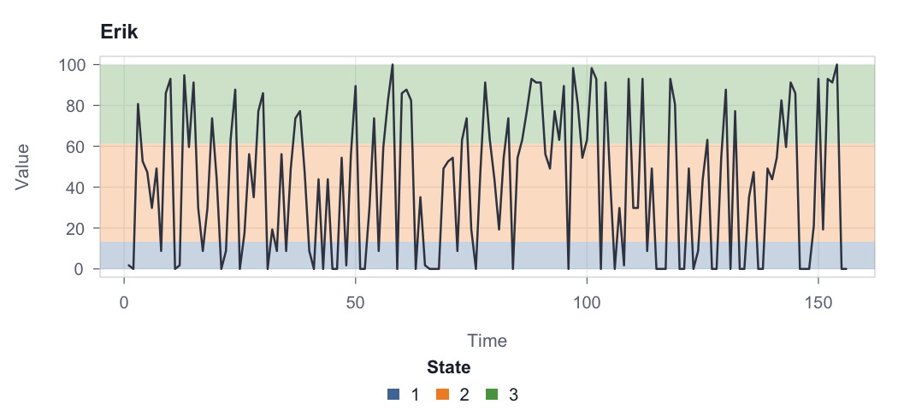
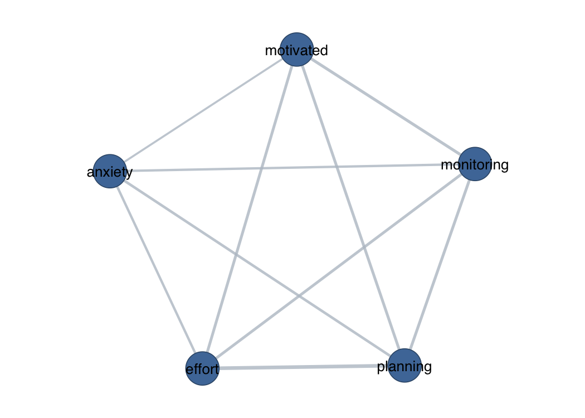

tsn constructs networks from time-series data. Representing a time series as a network exposes its temporal structure to the tools of graph theory, and several established methods do this in different ways. What distinguishes them is what each node represents; tsn collects them under a single interface and a single result object.
Whatever the input, a single time series or a collection of them, the analysis follows one of two paths that differ only in what becomes a node:
┌─► states ───────────────────────► transition network
a univariate series ──┤
(one or several) └─► series, windows, or points ──► distance or
(individual observations) visibility networkTwo broad strategies are supported:
- Nodes are states. A numeric series is discretized into a small alphabet of states, and the network encodes how the series moves between those states over time. The result is a state-transition network.
- Nodes are the measurements themselves, whether a whole series, a sliding window, or an individual observation. Edges are then defined directly by the distance or the visibility relation between nodes, with no discretization step.
The exported functions cover both strategies:
| Task | Function(s) | Options |
|---|---|---|
| Model state transitions |
ts_tna(), ts_ftna(), ts_cna(), ts_atna()
|
transition probabilities, frequencies, co-occurrences, or attention-weighted transitions (via Nestimate) |
| Split a pooled model by series | series_networks() |
one network per series |
| Discretize values into states |
discretize() (or tsn(unit = "state")) |
15 discretizers, applied consistently across series |
| Classify local trend direction | trend() |
Theil–Sen (default), OLS, Spearman, or Kendall slope; growth factor |
| Build a distance or visibility network |
tsn(), vg()
|
15 distance measures; natural or horizontal visibility; full, nearest-neighbour, threshold, percentile, or Gaussian connectivity |
Related packages.
tsnis distinct fromtsnet(Bayesian graphical vector autoregression),tsna(temporal social-network analysis), andts2net(a related time-series-to-network toolkit). Its emphasis is a compact, dependency-light interface that supports irregularly spaced visibility graphs, fifteen discretizers, and an optional bridge to transition-network models.
Installation
The package is not currently published on CRAN. Install the development release from GitHub:
install.packages("remotes")
remotes::install_github("mohsaqr/tsn")State-transition networks
The ts_tna() family constructs a transition network directly from raw measurements: each series is discretized, a single state alphabet is shared across all series, and the estimation is delegated to Nestimate (a Suggests dependency). The four functions differ only in the quantity placed on the edges. ts_tna() estimates transition probabilities, ts_ftna() raw transition frequencies, ts_cna() co-occurrences, and ts_atna() attention-weighted transitions.
The packaged srl dataset records nine self-regulated-learning indicators for 36 students over 156 daily occasions, on 0-100 scales. Because a few reports are missing, we model the complete effort observations for two students:
data(srl)
complete <- subset(srl, !is.na(effort))
model <- ts_tna(
complete,
value = "effort",
id = "name",
time = "day",
series = c("Erik", "Eve"),
n_states = 3,
labels = c("low", "moderate", "high")
)
model
#> Transition Network (relative probabilities) [directed]
#> Weights: [0.276, 0.398] | mean: 0.333
#>
#> Weight matrix:
#> low moderate high
#> low 0.381 0.343 0.276
#> moderate 0.304 0.373 0.324
#> high 0.320 0.282 0.398
#>
#> Initial probabilities:
#> low 1.000 ████████████████████████████████████████
#> moderate 0.000
#> high 0.000The diagonal of the transition matrix is only mildly elevated: a low day is followed by another low day with probability 0.381 and a high day by another high day with probability 0.398, against roughly 0.3 for every alternative, so these students’ daily effort persists, but weakly. Because the state alphabet is learned from both series jointly, the two students are placed on a common scale. series_networks() then splits the pooled model into one network per series:
series_networks(model)
#> series type observations states edges
#> Erik tna 156 3 9
#> Eve tna 156 3 9The resulting collection supports print(), summary(), as.data.frame(), and plot() directly (plot() takes series = "<name>" when the collection holds more than one model). The combined plot places each student’s shaded series alongside their own transition network:
plot(model, ribbon = TRUE, overlay = "none")
#> Registered S3 method overwritten by 'cograph':
#> method from
#> print.mcml Nestimate
Because the result is a genuine Nestimate model, the full range of downstream Nestimate tools applies unchanged (for example Nestimate::net_centrality(model)). Inferential procedures retain their usual sampling requirements; sequence bootstrap, in particular, is not informative for a model estimated from a single sequence.
From values to states: discretize() and trend()
discretize() is the bridge from a numeric series to a state sequence. Using the same srl data, the student recorded as Erik contributes 156 daily reports:
states <- discretize(
srl,
value = "effort",
id = "name",
time = "day",
series = "Erik",
method = "quantile",
n_states = 3,
labels = c("low", "moderate", "high")
)
summary(states)
#> state count proportion mean_value
#> 1 low 54 0.3461538 1.786875
#> 2 moderate 50 0.3205128 43.228070
#> 3 high 52 0.3333333 83.569501Fifteen discretizers are available (threshold, width, quantile, kde, kmeans, gaussian, hclust, ordinal, symbolic, change_points, entropy, magnitude, adaptive_magnitude, percentile_magnitude, dtw). The temporal discretizers are group-aware: ordinal patterns, adaptive-magnitude features, and DTW windows are computed separately within each series and then mapped onto one shared state vocabulary, so that states remain comparable across series.
trend() is a companion discretizer for direction rather than level: it classifies each observation by the slope of a rolling regression.
Visibility networks: observations as nodes
A visibility graph (Lacasa et al., 2008) maps a single series onto a network of its observations: two time points are connected when an unobstructed straight sightline over the intervening values joins them. The packaged esm_srl dataset holds 2,820 momentary experience-sampling reports from 41 students; the first 60 anxiety ratings of one student suffice to illustrate the construction.
data(esm_srl)
anxiety <- head(subset(esm_srl, name == "Jamal"), 60)
network <- vg(anxiety, series = "anxiety")
summary(network)
#> method unit nodes dyads edges density minimum_weight maximum_weight
#> 1 visibility time 60 144 144 0.08135593 1 1
#> directed
#> 1 FALSEThe 60 observations become 60 nodes joined by 144 sightlines. Every network offers two complementary views: plot(x) draws the network itself through cograph, and plot(x, "series") shows the source series from which it was built.

plot(network, "series")
vg(x) builds a natural visibility graph and vg(x, "horizontal") a horizontal one (Luque et al., 2009); the tsn() shortcuts "nvg" and "hvg" are equivalent. Visibility options include directed, penetrable (sightlines may cross a bounded number of points), limit (a maximum elapsed time), and decay. When a time column is supplied, both the sightlines and the elapsed-time rules respect the observed spacing between points, which may be irregular, rather than mere row positions.
State networks from visibility
tsn(unit = "state") applies the same discretization engine and then projects the visibility graph onto the states: nodes become states, and each edge aggregates (by default, sums) the sightlines between occurrences of a state pair.
state_network <- tsn(
srl,
value = "effort",
id = "name",
time = "day",
series = "Erik",
unit = "state",
discretization = "quantile",
n_states = 3
)
summary(state_network)
#> method unit nodes dyads edges density minimum_weight maximum_weight
#> 1 visibility state 3 6 6 1 21 135
#> directed
#> 1 FALSEThe series view shades the states over the raw values, either as horizontal value bands (overlay = "horizontal") or as vertical runs along time:
plot(state_network, "series", overlay = "horizontal")
Distance networks: series and windows as nodes
Under method = "distance", nodes are whole series (or sliding windows) and edge weights are similarities, so that larger weights indicate closer series. Comparing five of one student’s momentary indicators as complete series is a single call:
hana <- subset(esm_srl, name == "Hana")
regulation <- tsn(
hana,
series = c("planning", "monitoring", "effort", "motivated", "anxiety"),
method = "distance",
distance = "correlation"
)
summary(regulation)
#> method unit nodes dyads edges density minimum_weight maximum_weight
#> 1 distance series 5 10 10 1 0.3875223 0.7225132
#> directed
#> 1 FALSE
plot(regulation, labels = TRUE)
All ten pairs are connected because the default connectivity rule is connect = "full"; planning and effort form the closest pair. Fifteen distance measures are available (euclidean, manhattan, maximum, canberra, minkowski, binary, cosine, correlation, spearman, dtw, ccf, nmi, voi, event_sync, van_rossum), and connect sparsifies the network by nearest neighbours, a distance threshold, a percentile, or a Gaussian kernel.
The same function compares sliding windows of a single series, turning one trajectory into a network of its own epochs:
windows <- tsn(
anxiety,
series = "anxiety",
method = "distance",
distance = "dtw",
window = 12,
step = 4,
connect = "nearest",
neighbors = 2
)
summary(windows)
#> method unit nodes dyads edges density minimum_weight maximum_weight
#> 1 distance window 13 78 16 0.2051282 0.004247933 0.006841757
#> directed
#> 1 FALSEThe 60 ratings yield 13 overlapping windows; retaining each window’s two nearest neighbours keeps 16 of the 78 possible dyads. The default window is 10% of the series length, so step should be chosen relative to the series length. Further options include chain = TRUE (connect only consecutive windows or series), directed = TRUE, and normalize = TRUE.
A single object, a consistent grammar
However it was constructed, a tsn network is the same kind of object: a list-backed result carrying the netobject and cograph_network classes, with a tidy dyad table inside. The standard methods apply throughout:
summary(network) # one tidy row describing the network
as.data.frame(network) # the dyad table
as.data.frame(network, what = "series") # the source observations
as.matrix(network) # the weighted adjacency matrix
plot(network) # network view, rendered by cograph
plot(network, "series") # source-series view, base graphicsplot() on a network applies readable defaults (a spring layout with degree-scaled nodes); any cograph argument passes straight through and overrides them, for example plot(network, layout = "circle", labels = TRUE).
Vignettes
-
vignette("nestimate-workflow")builds a transition-network model from a series and tests it withNestimate: bootstrap confidence intervals, centrality stability, a Markov-order test, and a permutation test comparing two periods. -
vignette("constructing-time-series-networks")applies every exportedtsnfunction to one packaged momentary anxiety series, building each network representation in turn. -
vignette("group-models")builds one transition network per condition on a shared state alphabet and compares them. -
vignette("nestimate-compatibility")maps, verb by verb, which Nestimate analyses accept atsnmodel directly. -
vignette("plotting-time-series-networks")documents the plotting surface: the network and source-series views, state overlays, and transition-model plots.
Relationships with other packages
tsn focuses on turning time series into networks and relies on base R alone for that core. Two related tasks are handled by companion packages:
-
Nestimate(Saqr, López-Pernas, & Misiejuk, 2026) estimates and analyses transition networks, following the transition-network-analysis framework of Saqr et al. (2025). Thets_tna()family discretizes the raw series and then calls its builders, so atsntransition network is itself aNestimatemodel that everyNestimatemethod applies to. -
cograph(Saqr, López-Pernas, & Tikka, 2026) provides graph conversion, analytics, layout, and rendering. Because everytsnresult already carries thecograph_networkclass,plot(network)delegates tocograph::splot().
Both are Suggests: Nestimate is needed only for transition networks and cograph (with igraph) only for network plots. Everything else runs on a base-R installation.
References
Lacasa, L., Luque, B., Ballesteros, F., Luque, J., & Nuño, J. C. (2008). From time series to complex networks: The visibility graph. Proceedings of the National Academy of Sciences, 105(13), 4972–4975. https://doi.org/10.1073/pnas.0709247105
Luque, B., Lacasa, L., Ballesteros, F., & Luque, J. (2009). Horizontal visibility graphs: Exact results for random time series. Physical Review E, 80, 046103. https://doi.org/10.1103/PhysRevE.80.046103
Saqr, M., López-Pernas, S., Törmänen, T., Kaliisa, R., Misiejuk, K., & Tikka, S. (2025). Transition network analysis: A novel framework for modeling, visualizing, and identifying the temporal patterns of learners and learning. Proceedings of the 15th Learning Analytics and Knowledge Conference. https://doi.org/10.1145/3706468.3706513
Saqr, M., López-Pernas, S., & Misiejuk, K. (2026). Nestimate: Network estimation, bootstrap, and higher-order analysis. R package version 0.8.4. https://github.com/mohsaqr/nestimate
Saqr, M., López-Pernas, S., & Tikka, S. (2026). cograph: Analysis and visualization of complex networks. R package version 2.4.5. https://github.com/sonsoleslp/cograph
Authors
- Mohammed Saqr, University of Eastern Finland · saqr.me
- Sonsoles López-Pernas, University of Eastern Finland · sonsoles.me
- Manuel J. Gómez, University of Murcia · manueljgomez.es